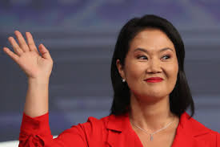

| Nombres | Partido Político | Foto | CV |
|---|---|---|---|
| Keiko Fujimori | Fuerza popular |
 |
Vaga |
| César Acuña | Alianza para el progreso | |
Empresario(un compra votos) |
| Jorge Nieto | Buen Gobierno | |
Militar |
| Rosario Fernández | Un Camino Diferente | |
Empresaria |
| Herbert Caller | Partido Patriótico del Perú | |
Empresario? |
| Alonso Lopez | Ahora Nación | |
Académico |
| Jose Luna | Podemos Perú | |
Empresario |
| Roberto Sánchez | Juntos por el Perú | |
Psicólogo |
| Carlos Jaico | Perú Moderno | |
Abogado |
| Fernado Olivera | Frente de la Esperanza | |
Administrador de empresas |
| Charlie Carrasco | Partido Demócrata Unido Perú | |
Catedrático |
| Marisol Perez | Partido Demócrata Unido Perú | |
Abogada |